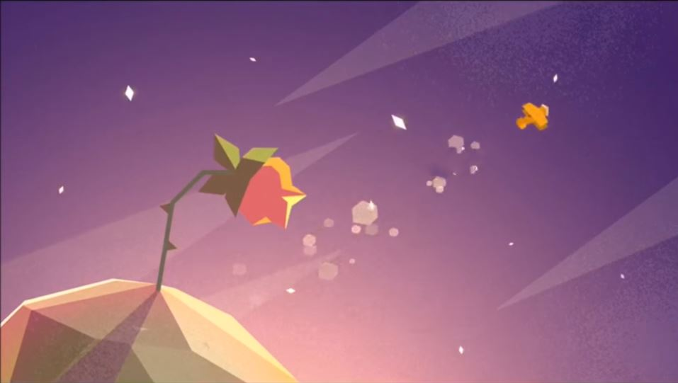
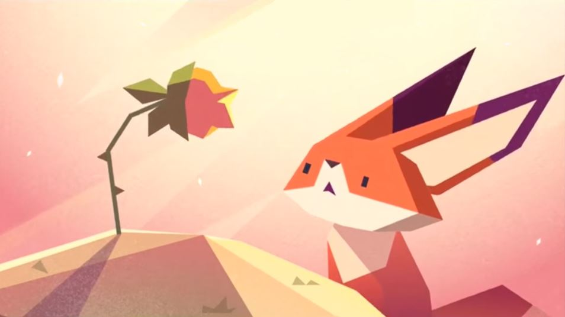

– "Я была слишком горда и глупа из-за этого Маленький Принц улетел. И сейчас я остаюсь увядать в одиночку", - рассказала она лисенку.
Выслушав историю Розы рыжий лисенок сказал ей, что сможет отыскать Маленького Принца. И лисенок отправился на поиски Маленького Принца.

